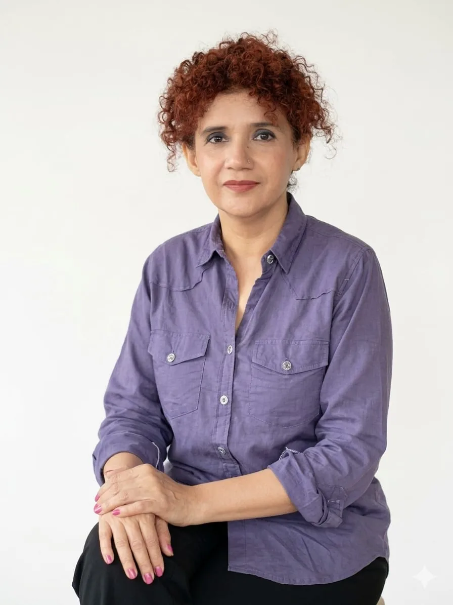

Serving Dubai, Abu Dhabi, Sharjah & all of the UAE — Online
A Pakistani Therapist Who Understands Your World —
Online in Dubai & Across the UAE
Looking for an Urdu-speaking therapist in the UAE? Sessions are in Urdu, Punjabi or English with Attia Altaf, a Pakistani psychotherapist, on Zoom from Pakistan, one hour ahead of you. This is not a UAE clinic: every session is online.
Therapy in Your Own Language, From Pakistan
No explaining rishta pressure, izzat or the guilt of living far from your parents: Attia lives it. And in Dubai's close-knit Pakistani community, an online session means no waiting room where someone might see you.
If You Need Help Right Now
Online therapy with Attia is not an emergency service. If you are thinking of harming yourself or are in danger in the UAE:
- Emergency: 999 for police, 998 for an ambulance.
- 800 SAKINA (800 725462): the Department of Health – Abu Dhabi's mental health support line, open 24 hours, in Arabic and English.
Or go to the emergency department of the nearest hospital.
The UAE Working Week and Session Times
The UAE federal government moved to a Saturday–Sunday weekend on 1 January 2022, with a half day on Friday (The National). Private employers still set their own working week, and Sharjah's government works Monday to Thursday, with Friday to Sunday off (Khaleej Times).
Sessions run seven days a week, so your days off are session days whichever working week you follow.
The UAE is one hour behind Pakistan all year, since neither country changes its clocks:
| UAE time (GST) | Pakistan time (PKT) | Note |
|---|---|---|
| 3pm | 4pm | The start of the session window, every day |
| Saturday or Sunday, 3pm–7pm | 4pm–8pm | Your weekend |
| 6pm–7pm | 7pm–8pm | The last hour, which may fit after work if you finish by 6pm |
| 7pm | 8pm | The last session ends |
If none of these hours work for you, say so when you message.
For Expats Across the UAE
Attia's clients in the UAE also include Indian, Bangladeshi and other Muslim and English-speaking expats. If you want a therapist who understands life far from home, sessions in English are open to you too.
What Therapy Costs in Dubai, and What Attia Charges
Dubai clinics that publish their fees charge from about AED 600 to AED 1,080 for a 50-minute session: AED 594 with a psychotherapist and AED 673 with a psychologist at one practice, AED 750 at another, and AED 1,080 at a third.
Attia's sessions are charged in Pakistani rupees. The AED figure is approximate, at current exchange rates.
PKR 8,000 / 50-minute session
≈ AED 104 per session at current exchange rates
One flat fee for every type of session — individual therapy, marriage counselling, anxiety, depression, OCD, trauma and more. Online, in Urdu, Punjabi & English, with no waiting list and no subscription.
Book a Session on WhatsAppPaying from the UAE
Payment details are shared on WhatsApp when you book your session.
Clinic fees as published on each clinic's own site, opened 24 Nov 2026: privatetherapyclinic.ae · connectpsychology.ae · clearmindscenter.com

Your Therapist: Attia Altaf
Integrative Psychotherapist (CPCAB-UK)
I am a UK-qualified (CPCAB) Integrative Psychotherapist with 8+ years' experience working with Pakistanis at home and across the diaspora — the UK, the Gulf, and beyond. Gulf clients carry a particular double weight: the pressures of Pakistani family life, plus the isolation and grind of expat life.
With me you will never have to translate your culture, justify your faith, or explain what rishta pressure or izzat means. We start from shared ground — and work on what is actually hurting.
- CPCAB (UK) Level 3 and Level 4 counselling qualifications; Level 5 in progress
- CBT, DBT, Trauma-Informed
- Sessions in Urdu, English & Punjabi
I work with depression, anxiety, OCD, trauma, postnatal depression and marriage problems.
Read full profile →Before You Book From the UAE
If the call drops
Attia is in Pakistan, so a power cut or an internet problem on her side can end a call, just as a drop in your Wi-Fi can. If that happens, reconnect and carry on.
When to see someone in the UAE first
Sessions with a therapist in Pakistan are not where to start if you might harm yourself or another person, may need medication, or don't feel safe at home. Attia does not prescribe; in the UAE, a psychiatrist, who is a medical doctor, can. In an emergency call 999 or 998, or 800 SAKINA, the Abu Dhabi Department of Health's 24-hour support line.
Distance is not a weakness in itself: UCLA Health notes that more than 60 studies found video therapy as effective as in-person sessions for most people with anxiety, depression and PTSD, and that more severe conditions need face-to-face care.
Marriage Counselling for Pakistanis in the UAE
High-pressure jobs, families judging from afar, and a marriage carrying it all.
Gulf life is famously hard on marriages. Work consumes one or both spouses, in-laws apply pressure from thousands of kilometres away, and many couples live apart for years — one in Dubai, one in Pakistan — with the marriage surviving on video calls.
Marriage counselling with Attia is always one-to-one. You work on your side of the marriage: how you communicate, hold boundaries and respond to conflict. Your spouse never joins, whether they are down the hall in Al Nahda or back home in Lahore, and the work never depends on them agreeing to therapy. Sessions are in Urdu or English, and pre-marital counselling before nikah is one-to-one too.
Online marriage counseling in Pakistan & abroad → · Muslim marriage counselling → · Pre-marital counselling →
Frequently Asked Questions
Can I see a Pakistani therapist online if I live in Dubai or the UAE?
Yes. Healing with Attia offers online therapy via Zoom to Pakistani, South Asian, and Muslim clients across the UAE — Dubai, Abu Dhabi, Sharjah and beyond. Sessions are in Urdu, English, or Punjabi, with a therapist who understands the culture you come from and the life you live now.
What are the session timings for UAE clients?
Sessions run every day, 4pm–8pm Pakistan time, which is 3pm–7pm UAE time (GST). Neither country changes its clocks, so this stays the same all year, weekends included. Message on WhatsApp to see the next available slot.
How much does online therapy cost from the UAE?
Dubai clinics that publish their fees charge roughly AED 600 to AED 1,080 for 50 minutes. Sessions with Attia are PKR 8,000 per 50-minute session — roughly AED 104 at current exchange rates. One flat fee for every type of session, with no subscription.
Can I use my health insurance?
No. We don't accept insurance. Sessions are paid directly.
Can I have therapy sessions in Urdu from the UAE?
Yes — Urdu, English, or Punjabi, and you can switch languages freely mid-session. Many clients find their emotions come more naturally in Urdu, even if their workday runs in English.
I searched for a Pakistani psychologist in Dubai — is this the same thing?
Attia Altaf is an Integrative Psychotherapist, not a psychologist — the training paths differ, but for talk therapy (anxiety, depression, trauma, marriage issues) a qualified psychotherapist is exactly the right professional. Read our guide: psychiatrist vs psychologist vs psychotherapist.
Do you offer marriage counselling in the UAE? Does my spouse have to join?
Yes, and no. Marriage counselling with Attia is always one-to-one, so your spouse never joins, whether they live with you in the UAE or are in Pakistan while work keeps you apart. You work on your side of the marriage: how you communicate, hold boundaries and respond to conflict. You can start whether or not your spouse believes in therapy, and they never need to know. Pre-marital counselling before nikah is one-to-one too.
Is therapy confidential? The Pakistani community in Dubai is small.
Completely. Sessions are online and private — no clinic waiting room, no chance of running into someone from your community. Sessions are never recorded. Nothing is shared with family, employers, or anyone else.
Do you have a clinic in Dubai?
No — and that is by design. Therapy is delivered fully online from Pakistan. You get culturally fluent professional therapy without clinic prices, commutes, or waiting lists.
Therapy That Understands Where You're From
No clinic visits. No one in the community ever knowing. One WhatsApp message is the entire first step. Message on WhatsApp to see the next available slot.
Book via WhatsAppLiving somewhere else abroad? See online therapy for Pakistanis abroad, with local session times.